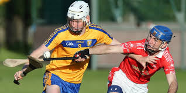

- 
Sports have played a huge part in my life from a young age. Ive played many sports, but my favourite is hurling.
Hurling plays a huge part in my community as it is a huge reason for the locals to get together.
For me, sports is a means of escape. An escape from work, An escape from studies, An escape from life
If I ever need a reason to blow off some steam or to clear my head, I'll pick up my hurley and sliotar
and head down to the local GAA pitch. The endorphins and freedom that come with playing sports are unmatched by
any other aspect of my life.
One of my greatest sporting memories is the North Cork Championship I won with Dromina 2 years ago.
It was played in Buttevant and was won by an insane Last minute goal scored by our full forward
to win the game by a single point. The icing on the cake of this victory was that the trophy was dedicated
to my grand father who had recently passed away. It is a memory I shall never forget.
Travelling is one of my favourite and most expensive hobbies. I have travelled to many places across the globe.
From America, to Kenya, to Italy and South Africa, I have been on mulitple journeys around the world. One of
my most treasured moments is my trip to Paris with my family. This was one of the last family holidays we had
before I left for college. We spent the week travelling through the capital of France enjoying the
cuisine and embracing the culture of the the french people.